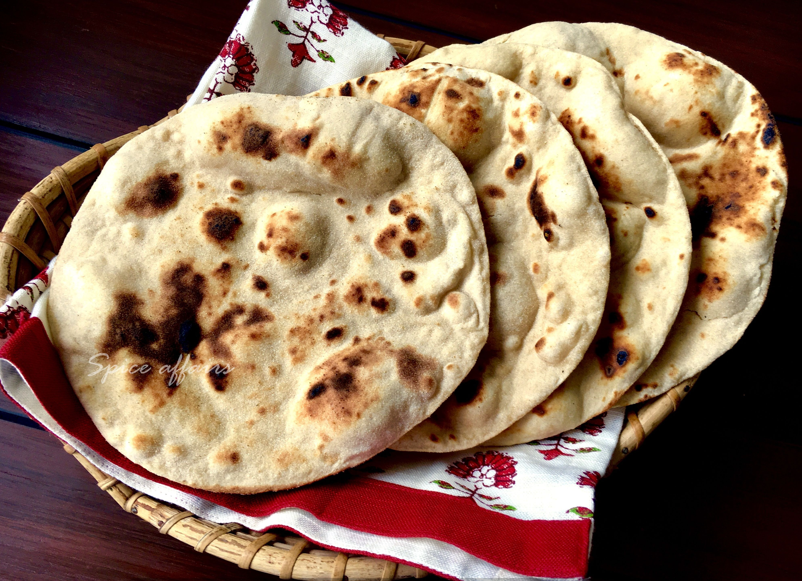
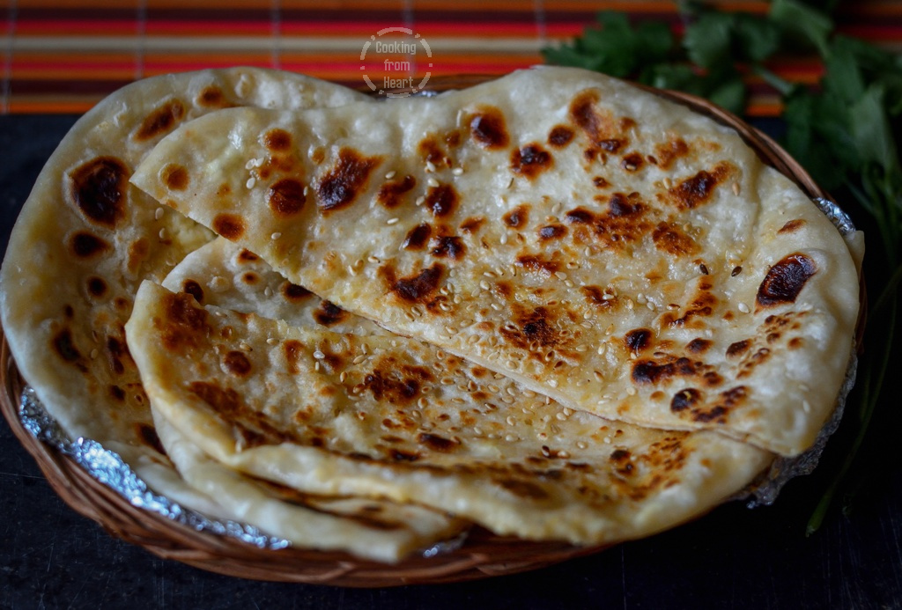
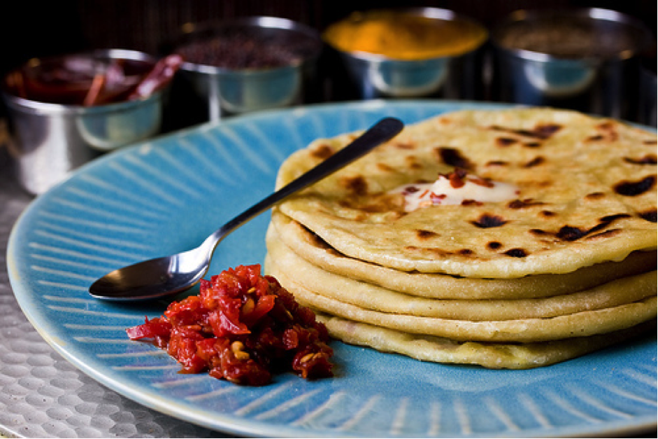

Tandoori
Tandoori roti is an Indian flatbread made of a mix of wheat flour and all-purpose flour (maida)..
Add to cart

Kulcha
A Kulcha is made of processed flour, Maida leavened with yeast, flattened dough is baked in tava.
Add to cart

Paratha
A Paratha, is made out of Atta or Maida which is made into comparatively thicker or stuffy rounds and baked on the iron plates..
Add to cart
Naan
A Naan is also a flat bread made from Maida, almost similar in taste with kulcha. But is more tastier
Add to cart